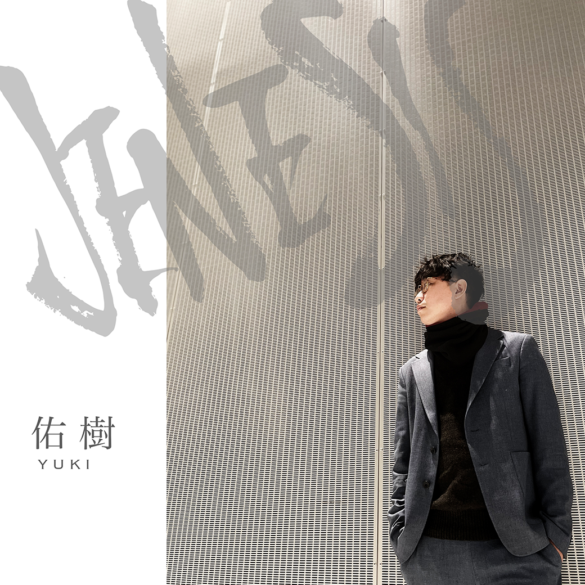

Song page
JENESIS
無音の軌道を漂うような浮遊感。
YUKIは、夜の記憶を映画のように聴かせるアーティストプロジェクト。
JENESIS - Lyrics
一つの転機が路を創り､
未来図を辿り､歩を進めた｡
期待と衝動の音色を聴けば､
人生に意味を見出せるから｡
恐れや不安が襲ってきたのなら､
腰掛け､寄り添い､涙して欲しい｡
ナニかを手探りで掴もうとしても､
その手は虚しく空を切るだけ｡
明確に記された使命を刻み､
0から1へと､汚れすぎた手で｡
微かに漏れ出す光を目指し､
間違いでも良い､偽りでも良い｡
事実に塗れたこの足跡は､
自身の行く末を暗示しているの？
何故だろう？苦しみ､辛さを感じても
高すぎる障害も､圧縮されていく｡
憧れた世界とは､程遠いけれど､
喜怒哀楽を繰り返し答えを出せた｡
紡ぎ合う絆が層を重ねて､
温かく僕等を包み込むだろう｡
アナタと笑いあう時間を想えば､
先に待つ困難も乗り越えられる｡
2人で駆け抜けたこの道筋は､
新たな岐路となり迎えるでしょう｡

静かな決意ほど、 未来を大きく変えていく。
"始まりは、いつも孤独の中にある。"
STREAM NOW
JENESIS
Other songs